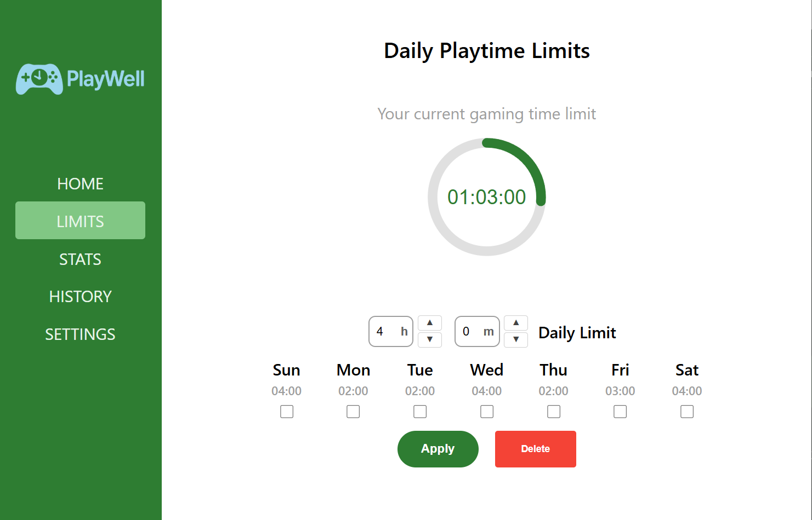
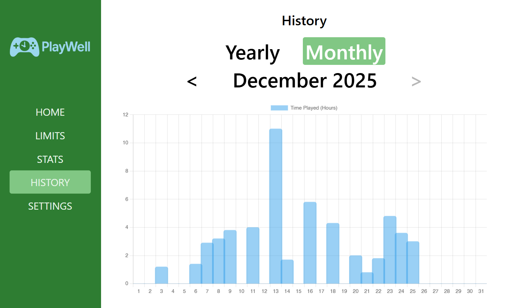

Focus, without the friction
Track your game time with clarity and calm.
PlayWell keeps a quiet ledger of your sessions, shows trends at a glance, and helps you set gentle limits without breaking your flow.
Windows x64 only. Portable keeps everything in its folder.


Session insights
Review clean timelines with daily, weekly, and historical views.
Gentle limits
Set time goals that nudge you, without locking you out.
Local-first
Your data stays on your machine, fast and private.
Verify your download
Signatures are provided for each asset. You can verify with the public certificate below.
openssl dgst -sha256 -verify app-signing.crt ^
-signature PlayWell-1.0.0-release-setup.exe.sig ^
PlayWell-1.0.0-release-setup.exe